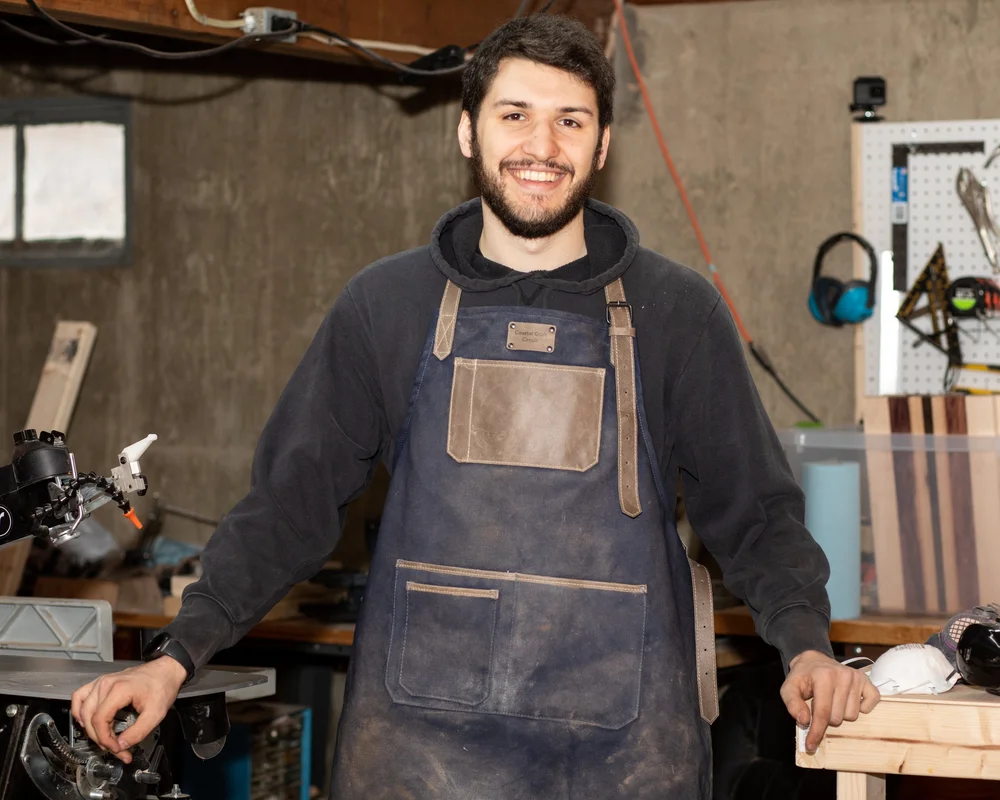

About

About Me
My name is Frank Pellicano, and I am the creator behind Coastal Craft Circuit.
I have always enjoyed creating things and working with my hands. My interests span woodworking, painting, electronics, and a variety of other creative projects.
I first discovered woodworking at 5 years old when I saw a huge pile of sawdust in my fathers workshop; I promptly set up my action figures to enact the 'battle for sawdust hill.' Woodworking quickly became my favorite creative outlet as I learned from my father to build and create projects by hand.
At 8 years old, my father introduced me to his career of electrical engineering. He bought me a Snap Circuits toy set, where you can follow along and safely learn and play with electronics. The first project was to spin a fan blade attached to a motor. It worked, but then I thought "What if I add more batteries?" After doing so, the fan FLEW off the motor and across the room! I was hooked.
This website is a place for me to share those projects, document what I am working on, and occasionally provide tutorials and plans for others who may want to build something themselves.
Custom Services Offered
- Woodworking
- Scenery Paintings
- Electronic Design
- CAD Models
- 2D and 3D Image Carvings
- Pen and Pencils
- Wedding Toppers
- Furniture
If you would like to donate to me and help grow my business, click the Donate button below which will bring you to PayPal. Anything helps, and is always very appreciated!